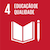
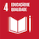

Relatório Anual
Brasil
2017
É com satisfação que me reporto ao ano de 2017 no Brasil. Foram doze meses especialmente ricos e desafiadores para as Nações Unidas em geral e o PNUD em particular. Em 2017, o Marco de Parceria das Nações Unidas para o Desenvolvimento Sustentável (2017- 2021) e o Programa de País do PNUD (2017-2021) cumpriram seu primeiro ano de implementação. Esses documentos dialogam entre si, e ambos com a Agenda 2030 para o Desenvolvimento Sustentável.
O Marco de Parceria resulta do esforço conjunto de representantes do governo brasileiro, da sociedade civil, do setor privado e das Nações Unidas e define as bases da cooperação para o desenvolvimento que os organismos do Sistema ONU no Brasil estabelecerão no país até 2021. O Programa de País do PNUD, por sua vez, soma-se ao projeto coletivo da ONU no país de apoio ao Brasil nos desafios que se lhe impõem para o cumprimento dos 17 Objetivos de Desenvolvimento Sustentável, os ODS.
O êxito do Brasil no cumprimento da agenda global anterior, a Declaração do Milênio e seus Objetivos de Desenvolvimento do Milênio, que vigoraram de 2000 a 2015, comprova a capacidade do país de alcançar avanços significativos em médio prazo. Agora, diante do desafio da Agenda 2030, o Brasil mostra-se pronto para mais conquistas. O PNUD, juntamente com parceiros internos e externos ao Sistema das Nações Unidas, segue apoiando o país em suas novas realizações, mediante centenas de projetos de cooperação técnica, muitos deles presentes neste relatório.
As ações descritas nas próximas páginas demonstram a capacidade de mobilização do PNUD e de seus parceiros e reforçam a mensagem de que é possível, a despeito de quaisquer adversidades, estabelecer alianças para o desenvolvimento inclusivo e sustentável. A união de forças tem permitido conquistar espaços e fazer valer os princípios que a ONU defende em todo o mundo. Um exemplo disso, em 2017, foi a construção e o lançamento da Campanha Vidas Negras, no contexto da Década Internacional de Afrodescendentes (2015-2024). A iniciativa, que considerou o contexto histórico do preconceito e da discriminação étnico-racial no Brasil, tem se mostrado imprescindível.
Olhar para trás e contemplar conquistas é estímulo a mais para mirar o futuro com esperança e vontade de seguir empreendendo, lutando, conquistando e realizando.
Niky Fabiancic
Coordenador-Residente do Sistema ONU no Brasil
Representante-Residente do PNUD no Brasil
Apresentar o relatório anual do PNUD é revisitar os resultados de nossos projetos, atividades e eventos realizados em 2017. Este ano marcou o início da implementação do novo Documento de Programa do País (CPD), que estruturou nossas iniciativas em torno de quatro pilares: Pessoas, Prosperidade, Paz e Planeta, incorporando de forma integrada os 17 ODS da Agenda 2030 para o Desenvolvimento Sustentável, uma prioridade do PNUD e de todo o Sistema das Nações Unidas.
O CPD focaliza a ação do PNUD nas áreas mais vulneráveis do Brasil, sobretudo do Norte e do Nordeste. Priorizamos também as populações de baixo Índice de Desenvolvimento Humano (IDH), principalmente as mulheres afrodescendentes, povos indígenas, comunidades agroextrativistas, comunidades ribeirinhas e pessoas LGBTI.
Outro marco importante de 2017 foi a aprovação do novo Plano Estratégico global do PNUD 2018-2021: erradicar a pobreza, acelerar transformações estruturais e construir resiliência. Assim como o CPD, o plano global tem seu alicerce na Agenda 2030, estando comprometido com os princípios de universalidade, igualdade e de não deixar ninguém para trás. O plano reforça nosso compromisso de trabalhar com os governos, sociedade civil e setor privado, assim como catalizador do apoio do Sistema Nações Unidas, conforme mandato da Assembleia Geral.

O PNUD tem trabalhado para descentralizar a cooperação internacional, com foco nos estados do Norte e Nordeste. Atualmente, temos projetos de cooperação técnica em mais de 10 estados brasileiros, como Bahia, Sergipe, Piauí, Pará, Paraná, Mato Grosso, Mato Grosso do Sul, Minas Gerais, São Paulo e Distrito Federal. Em 2017, foram assinados acordos para a abertura de escritórios locais com os governos do Piauí e Pará.
A parceria com o Piauí fortalecerá a gestão pública para o desenvolvimento sustentável de 3 territórios-piloto (Cocais, Vale do Rio Itaim e Serra da Capivara) em temas como segurança cidadã, gestão de resíduos sólidos, agricultura sustentável e segurança hídrica. No mesmo sentido, a parceria com o Pará apoiará o plano “Pará 2030”, para dinamizar a economia e melhorar os indicadores socioeconômicos. O PNUD auxiliará na estruturação e fortalecimento institucional das secretarias estaduais, como as Secretarias de Estado de Meio Ambiente (SEMAS), de Administração (SEAD), de Planejamento e Orçamento (SEPLAN) e a Secretaria Extraordinária de Municípios Sustentáveis. Os dois novos escritórios serão inaugurados em 2018.
Nas próximas páginas serão apresentados alguns resultados, desde a gestão territorial de comunidades quilombolas, avaliação de políticas de proteção social, desenvolvimento econômico inclusivo, passando por publicações que fornecem insumos para gestores públicos, como o relatório sobre impacto socioenômico do vírus zika, até plataformas para ação e informação, como a de Filantropia. O compromisso do PNUD é não deixar ninguém para trás, sempre com foco na construção de uma sociedade mais inclusiva e sustentável.
Didier Trebucq
Diretor de País do PNUD no Brasil
ERRADICAR A POBREZA, ACELERAR TRANSFORMAÇÕES ESTRUTURAIS E CONSTRUIR RESILIÊNCIA
Ancorado na Agenda 2030 para o Desenvolvimento Sustentável e comprometido com os princípios de universalidade, igualdade e de não deixar ninguém para trás, o novo plano estratégico 2018-2021 do PNUD estabelece uma visão para a evolução do Programa nos próximos quatro anos, respondendo a um cenário de desenvolvimento em mudança constante e a necessidade crescente de parceiros.
Com base nos 50 anos de experiência do PNUD, o plano descreve como o organismo apoiará diversos países no cumprimento da Agenda 2030. Essa diversidade se reflete nos três grandes cenários de desenvolvimento descritos no plano: erradicação da pobreza; transformações estruturais; e criação de resiliência. Ele também descreve como duas novas plataformas – nos planos nacional e global –permitirão ao PNUD prestar apoio de maneira mais efetiva.
O plano identifica seis “soluções emblemáticas” às quais o PNUD agora alinhará seus recursos e expertise para ter um impacto real na pobreza, na governança, no acesso à energia, na igualdade de gênero, na resiliência e na sustentabilidade ambiental.
PLANO ESTRATÉGICO DO PNUD NO BRASIL
Em 2017, entrou em vigor o novo Plano Estratégico do PNUD no Brasil 2017-2021. Em termos programáticos, o PNUD Brasil vem desenvolvendo sua cooperação em torno de quatro áreas-chave: Pessoas, Planeta, Prosperidade e Paz. Trata-se de quatro dos cinco eixos que resumem a Agenda 2030 e seus Objetivos de Desenvolvimento Sustentável (ODS). O quinto eixo, Parcerias, é transversal e dele depende o alcance dos demais. Especificamente, cada eixo atua nos seguintes temas:
PESSOAS
Desenvolver capacidades para reduzir as desigualdades, superar crises e melhorar a qualidade dos serviços públicos, com foco nas pessoas em situação vulnerável, por meio de subsídios técnicos para políticas públicas.
PLANETA
Suporte para melhorar a gestão de recursos naturais, estímulo à eficiência energética e o enfrentamento da mudança global do clima, como o fortalecimento da resiliência de populações e regiões mais vulneráveis, incluindo áreas de risco de desastres naturais, com envolvimento tanto de governos quanto de empresas.
PROSPERIDADE
Estímulo ao crescimento econômico inclusivo, por meio do fortalecimento de parcerias público-privadas, promoção e suporte às micro e pequenas empresas, contribuição para a redução da desigualdade de gênero no setor privado, promoção de negócios inclusivos, estímulo e apoio aos negócios de impacto social com responsabilidade ambiental.
PAZ
Incentivo à transparência e ao enfrentamento da corrupção, fortalecimento das instituições do sistema de Justiça, estabelecimento de diálogos pela eliminação das diferentes formas de preconceito e discriminação, modernização do Estado, entre outras medidas que promovam os direitos humanos e uma sociedade pacífica.
A estratégia de atuação do PNUD no Brasil prevê o apoio à implementação da Agenda 2030; foca em áreas vulneráveis e populações de baixo Índice de Desenvolvimento Humano (IDH), sobretudo nas regiões de pobreza e extrema pobreza do Norte e do Nordeste, mulheres afrodescendentes, LGBTI, indígenas e agroextrativistas; expansão das parcerias com estados e municípios; intensificação das parcerias existentes com a sociedade civil, setor privado e universidades e desenvolvimento de novas alianças ; e finalmente, ação conjunta com outros organismos da ONU no país e centros de pesquisa e serviços globais.

Educação, esportes, saúde e proteção social. Tudo isso contribui para a erradicação da pobreza, o bem-estar, a redução de desigualdades, entre muitos outros objetivos da Agenda 2030. Em 2017, a atuação do PNUD no eixo Pessoas teve foco na formulação de estudos sobre desenvolvimento humano, apoio a projetos de educação de âmbito local e nacional, e estudo do impacto socioeconômico do vírus zika em vários países, entre eles o Brasil.
 

O Ministério do Desenvolvimento Social, o PNUD e a Fundação Maria Cecilia Souto Vidigal firmaram parceria, em 2017, para a execução do projeto “Bases para a Avaliação de Impacto do Programa Criança Feliz”. O programa tem como objetivo dar assistência a crianças beneficiárias do Bolsa Família nos primeiros 1.000 dias de vida (até os 3 anos de idade), período vital para o desenvolvimento das funções cognitivas da criança. O Programa Criança Feliz se destaca pelo diálogo que promove entre áreas, como assistência social, saúde, educação, cultura e justiça. A parceria com o PNUD constituiu-se na definição de protocolo de avaliação de impacto, elaboração dos questionários e instrumentos para a coleta de dados a nível municipal. Em 2017, 1.371 municípios já executavam o programa, e a expectativa do Governo Federal é de atender, até o fim de 2018, mais de quatro milhões de crianças.
O “Relatório Nacional de Desenvolvimento Humano 2017 - Movimento é Vida: Atividades Físicas e Esportivas para todas as pessoas” investigou o potencial das atividades físicas e esportivas de enriquecer a vida das pessoas, ampliar sua liberdade de escolha e promover o desenvolvimento humano. Mundialmente, já está consolidada a relação entre a prática de atividades físicas e esportivas e o desenvolvimento de saúde, sociabilidade, cognição, produtividade e qualidade de vida como um todo. O estudo apresenta o perfil da prática esportiva no Brasil com detalhamento sobre regularidade, motivações, principais modalidades e desigualdades no acesso, a partir dos dados do suplemento da PNAD 2015 e outras pesquisas nacionais. No Brasil, 70% da população é constituída de não-praticantes. O relatório aborda a prática de atividades físicas como um direito que deve ser garantindo por um conjunto de políticas públicas, reduzindo a percepção de dever, o qual recai exclusivamente sobre o indivíduo.
Esse foi o quarto volume do RDHN, produzido nacionalmente, a tratar de tema específico, sendo o primeiro no mundo a abordar esportes e atividades físicas. O relatório trouxe recomendações sobre como tornar as escolas brasileiras mais ativas, promover a saúde por meio do movimento, estruturar o Sistema Nacional do Esporte e trabalhar com a temática para o alcance das metas dos Objetivos de Desenvolvimento Sustentável, influenciando como se pensa o desenvolvimento e a construção de políticas públicas. O documento está disponível em: http://movimentoevida.org/
O Brasil permanece na faixa de alto desenvolvimento humano, com IDH 0,761, embora tenha parado de crescer em 2015. A conclusão faz parte do “Radar IDHM”, que traz informações atualizadas do Índice de Desenvolvimento Humano Municipal do Brasil (IDHM), para 2015, com base nas informações da Pesquisa Nacional por Amostra de Domicílios (PNAD).
O Radar IDHM está disponível para os anos 2011, 2012, 2013, 2014 e 2015. Por limitações estatísticas, disponibiliza os dados somente para Brasil, unidades federativas, 9 regiões metropolitanas (RM Belém, RM Fortaleza, RM Recife, RM Salvador, RM Belo Horizonte, RM Rio de Janeiro, RM São Paulo, RM Curitiba, RM Porto Alegre) e Distrito Federal. O estudo, lançado em 2017, resulta de mais uma parceria entre o Instituto de Pesquisa Econômica Aplicada (Ipea), a Fundação João Pinheiro e o PNUD
DESENVOLVIMENTO HUMANO PARA ALÉM DAS MÉDIASUm retrato das desigualdades e semelhanças entre mulheres e homens, negros e brancos, e populações urbanas e rurais no Brasil está no relatório Desenvolvimento Humano para Além das Médias: Índice de Desenvolvimento Humano Municipal por cor, sexo e situação de domicílio, lançado em 2017. Resultado de parceria entre o Instituto de Pesquisa Econômica Aplicada (IPEA), a Fundação João Pinheiro e o PNUD, o estudo consolida o Índice de Desenvolvimento Humano Municipal (IDHM) e 170 indicadores socioeconômicos para o Brasil como um todo, as 27 Unidades da Federação, 20 Regiões Metropolitanas e 111 municípios do país com base nos dados de 2000 e 2010.
Os resultados demonstram que o país obteve avanços significativos no que tange à longevidade, à educação e à renda a partir da adoção de estratégias inclusivas das últimas décadas, mas ainda apresenta expressivas desigualdades internas e regionais. Destaca-se, por exemplo, que, apesar dos avanços obtidos na qualidade de vida nas últimas décadas, a população negra brasileira ainda tem Índice de Desenvolvimento Humano (IDH) mais baixo que o da população branca.
Os dados do relatório podem subsidiar a elaboração de políticas públicas que visem à promoção da igualdade racial, de gênero e das condições de domicílio. Políticas abrangentes adaptadas às populações que sofrem discriminações e exclusões históricas podem evitar retrocessos e garantir que ninguém fique para trás. O relatório está disponível em: https://bit.ly/2rG5eFG
Viver aos pouquinhos, correr atrás, ser livre ou estar abandonado foram algumas das maneiras pelas quais mulheres e homens descreveram seu lugar e sua forma de vida na sociedade brasileira. São essas considerações – múltiplas, ricas e por vezes contraditórias – que formam esse relatório, como um esforço de análise de dados sobre o progresso multidimensional e a pobreza, assim como seus desdobramentos, como o preconceito, a garantia de direitos e a fome.
A base da análise foi uma pesquisa qualitativa, executada por intermédio de quinze grupos focais realizados em diferentes regiões do país, no âmbito do Relatório Regional sobre Desenvolvimento Humano para a América Latina e o Caribe, “Progresso Multidimensional: o bem-estar para além da renda”, com o intuito de conhecer os sentidos de progresso e pobreza acionados pelos próprios sujeitos ao falar de situações vividas cotidianamente. Se, por um lado, estavam presentes compreensões desses fenômenos em documentos de organismos internacionais, nas políticas públicas e na produção acadêmica, interessava à pesquisa ouvir o conhecimento produzido pelas pessoas acerca desses conceitos. http://bit.ly/2FuzhoZ
ATLAS DO DESENVOLVIMENTO HUMANO DAS REGIÕES METROPOLITANAS BRASILEIRASEm 2017, a Fundação João Pinheiro (FJP), o PNUD e o Instituto de Pesquisa Econômica Aplicada (Ipea) lançaram novos dados para o “Atlas do Desenvolvimento Humano nas Regiões Metropolitanas Brasileiras”. São indicadores de 4 regiões metropolitanas: Florianópolis (SC), Grande Teresina (PI), Juazeiro-Petrolina (BA/PE) e Sorocaba (SP). Com a inclusão, já existem dados para 24 regiões metropolitanas do Brasil. http://atlasbrasil.org.br/2013/
O PNUD e a Itaipu Binacional têm acordo até 2019 para a localização dos ODS nos 54 municípios do Oeste do Paraná, com atividades de Diálogos Municipais, Avaliação e Monitoramento e Formação. Em 2017, foram realizados Seminários Microrregionais sobre os Objetivos de Desenvolvimento Sustentável (ODS). Essa etapa de diálogos tem o objetivo de fomentar a articulação de prefeituras, instituições públicas e privadas, o terceiro setor e a população em geral em núcleos de diálogo municipal sobre os ODS, com a proposição de construção de Agendas de Atuação Conjunta com as prioridades do município para o desenvolvimento sustentável. Ao longo do ano, o projeto também atuou com dados e informação, no eixo de Avaliação e Monitoramento, com a publicação de diagnósticos, estudos e levantamentos, com base em indicadores municipais para os 54 municípios do Oeste. Esses estudos deverão servir de subsídio para uma plataforma online, pública e gratuita, de busca de indicadores municipais de monitoramento dos ODS. Com esse projeto, espera-se identificar os principais desafios da região, com base nos ODS e nos indicadores municipais, conectando cada vez mais a região à agenda global rumo ao desenvolvimento sustentável.
A atuação do PNUD na saúde em 2017 incluiu um conjunto de atividades que englobaram o apoio ao Programa Nacional de DST/Aids, o fortalecimento da capacidade da Anvisa para controlar medicamentos e um estudo regional sobre o impacto socioeconômico do vírus Zika. Abaixo alguns desses destaques.
O estudo “Uma avaliação do impacto socioeconômica do vírus Zika na América Latina e no Caribe: Brasil, Colômbia e Suriname como estudos de caso”, lançado em 2017, resultante de parceria entre PNUD e Federação Internacional das Sociedades da Cruz Vermelha e do Crescente Vermelho (FIRC), com a colaboração do Instituto de Saúde Global de Barcelona (ISGlobal) e da Universidade Johns Hopkins (JHU), apresentou um conjunto importante de achados e conclusões. No longo prazo, o custo da microcefalia resultante do vírus Zika pode variar de 3 bilhões a 10 bilhões de dólares só para o Brasil, impondo ainda um ônus imediato sobre os sistemas de cuidados de saúde e bem-estar social. Esse impacto será ainda mais severo em países mais pobres da América Latina. A epidemia de Zika terá impacto significativo nas esferas econômica e social nas Américas, com a exacerbação da pobreza e da desigualdade, o aumento da desigualdade de gênero, do estigma e dos desafios para o bem-estar dos afetados. O estudo recomenda ainda que estratégias de resposta regionais e nacionais sejam fortalecidas e envolvam as comunidades.
Outra contribuição importante do PNUD no campo da saúde refere-se ao controle de medicamentos. Em parceria com a Agência Nacional de Vigilância Sanitária (ANVISA), e a Fundação Faculdade de Medicina da USP, o PNUD firmou carta acordo em 2017, que possibilitará a implantação do controle de medicamentos, como previsto pelo Sistema Nacional de Controle de Medicamentos (SNCM), o qual estabelece os mecanismos e procedimentos para o Rastreamento de Medicamentos, por meio de tecnologia de captura, armazenamento e transmissão eletrônica de dados, em toda a cadeia dos produtos farmacêuticos no território nacional. Acesse: https://bit.ly/2rGWxKD
"A magnitude e a distribuição desigual do impacto do Zika requerem, portanto, uma resposta multifacetada adequada, adaptada à situação e às necessidades de cada país. O governo brasileiro, por exemplo, já deu passos significativos nessa direção, com apoio dos estados e municípios, assim como da sociedade em geral" Didier Trebucq, Diretor de País do PNUD
Assegurar a educação inclusiva, equitativa e de qualidade, e promover oportunidades de aprendizagem ao longo da vida para todos é o objetivo do PNUD e seus parceiros em projetos como o “Escolas e Comunidades Ativas”, “Educação em Maceió”, “INEP” e “Neojibá”.
O projeto Escolas e Comunidades Ativas visa tornar as crianças entre 6 e 12 anos de idade fisicamente mais ativas nos ambientes escolar e comunitário, contribuindo para sua vida acadêmica e seu desenvolvimento. Oportunidades para praticar esportes e atividades físicas são direitos essenciais para o desenvolvimento humano e o caminho para uma vida saudável, feliz e produtiva. A metodologia do projeto está disponível no portal de referência: https://www.escolasecomunidadesativas.org/
O projeto “Fortalecendo a Política Educacional de Maceió” oferece assistência técnica à cidade de Maceió para a reestruturação da rede municipal de ensino, tendo o IDEB como conceito orientador para a qualidade da educação, dialogando e refletindo a realidade local. Com o apoio institucional e financeiro do Ministério da Educação, foi prestada assessoria técnica para a elaboração de diretrizes e orientações para todas as etapas da educação (Educação Infantil e Ensino Fundamental) e modalidades de ensino (Educação Especial e Educação de Jovens e Adultos e Idosos), bem como para a formação continuada de professores, gestores e profissionais da educação. Ademais, o projeto busca oferecer subsídios e trazer inovações para a formulação de políticas e programas educacionais destinados ao enfrentamento do analfabetismo e à educação integral, além do fortalecimento da gestão escolar. Dentre os resultados alcançados em 2017, está a publicação das “Orientações Curriculares para a Educação de Jovens, Adultos e Idosos” e das “Diretrizes da Avaliação da/para Aprendizagem da Rede Municipal de Ensino de Maceió”.
Desde 1992, o Instituto Nacional de Estudos e Pesquisas Educacionais Anísio Teixeira (Inep) e o PNUD desenvolvem ações de cooperação, o que tem permitido o acesso do Inep a experiências internacionais na área de avaliação e pesquisa educacional. Em 2017, um novo projeto foi celebrado para realizar publicações e debates sobre parâmetros da avaliação educacional, como o programa “Encontros Memoráveis”, realizado pela UnB TV, como parte das comemorações pelos 80 anos do INEP, com o tema “O Inep de Anísio Teixeira”, educador brasileiro e diretor do Inep entre 1952 e 1964. Além disso, foi realizado o Seminário Internacional sobre Educação Superior com o objetivo principal de proporcionar uma reflexão analítica sobre a Avaliação do Ensino Superior nas suas diferentes versões: as avaliações in loco, o Exame Nacional de Avaliação de Desempenho de Estudantes (Enade) e os Indicadores de Qualidade da Educação Superior.
Finalmente, o projeto “Instrumentos para Orquestras Juvenis e Infantis da Bahia” (Neojiba III) distribuiu 660 instrumentos (308 trompetes, 88 trompas e 264 trombones) para 2040 estudantes de colégios estaduais da Bahia, integrantes de 35 orquestras juvenis e infantis. A aquisição contribui para o resgate da tradição das fanfarras e bandas marciais de escolas, compostas por 60 integrantes, que costumam ser o primeiro espaço no qual os jovens têm contato com o ensino de música. Além disso, em 2017, estudantes, professores e membros de fanfarras receberam formação teórico-instrumental dos profissionais do Neojiba, por meio de oficinas de teoria musical, sopros e luteria básica para instrumentos de fanfarra. O curso apresenta conteúdos teórico-práticos para o trabalho com uma banda marcial como: aulas de teoria musical, de regência, técnicas dos instrumentos utilizados nas bandas e técnicas de ensino coletivo com ênfase em Banda Marcial, distribuídos em 11 encontros com média de frequência de 100 participantes de aproximadamente 20 municípios. Para conferir o talento desse grupo, acesse: http://neojiba.org/
Estimular o crescimento econômico inclusivo, por meio de parcerias, está no cerne do eixo Prosperidade. Em 2017, o PNUD atuou em várias frentes para fortalecer e acelerar negócios inclusivos e de impacto social, entre eles startups, parcerias públicoprivadas na área de infraestrutura, além de micro e pequenas empresas. Com a mesma perspectiva de inclusão, investiu em alianças para a consolidação do setor de filantropia no Brasil. O PNUD iniciou também um diálogo com o setor financeiro para a promoção do desenvolvimento sustentável na região Sul, a partir da reorientação do crédito e das linhas de financiamento. Todos os projetos reforçam-se mutuamente para aprimorar o ambiente de negócios e garantir o cumprimento de diversos Objetivos de Desenvolvimento Sustentável.
Apoiar os pequenos negócios inclusivos e de impacto social, estimular seu crescimento sustentável, elevar sua competitividade e fortalecer sua capacidade de exercer impacto socioambiental positivo e escalável estão entre os principais objetivos da “Iniciativa Incluir”, desenvolvida por PNUD e SEBRAE Nacional. A iniciativa visa ainda incentivar o desenvolvimento de modelos de negócio e soluções economicamente viáveis que geram valor compartilhado com a sociedade. Em 2017, o projeto realizou nacionalmente a Chamada de Casos Incluir 2017 para selecionar ideias e casos de negócios de impacto, com foco em soluções de negócio capazes de responder às demandas dos Objetivos de Desenvolvimento Sustentável (ODS). No total, a chamada recebeu 857 inscrições, das quais dez sagraram-se vencedoras, representando diferentes regiões do país. Os resultados da seleção mereceram festa de divulgação em agosto de 2017. O projeto realizou também seminários regionais no Nordeste, Sudeste e Centro-Oeste, com o objetivo de gerar e disseminar conhecimento, visando ao fortalecimento do ecossistema de negócios inclusivos e de impacto social no Brasil.
O Impact Hub (rede global de empreendedores de impacto, laboratório de inovação, incubadora de empresas e centro colaborativo de emprendimento social ao mesmo tempo) e o PNUD realizaram, em 2017, a segunda edição do Accelerate2030, programa transnacional de projeção em escala para empreendimentos de impacto. A missão do Accelerate2030 é dimensionar o impacto de empreendimentos que contribuem para os Objetivos de Desenvolvimento Sustentável (ODS) e para ajudá-los a desenvolver uma cultura corporativa sustentável. Em 2017, empreendimentos de 17 países desenvolvidos e em desenvolvimento, de quatro continentes, foram encorajados a se inscrever. O PNUD Brasil teve importante papel na avaliação dos projetos apresentados. Entre os dez finalistas, destacou-se o projeto brasileiro Piipee, com o desenvolvimento de uma solução biodegradável que elimina a urina e limpa o vaso sanitário sem o uso de água. A iniciativa reduz significativamente o consumo e estimula o uso consciente da água. https://bit.ly/2BfxdSG
O Brasil tornou-se o oitavo país-piloto a lançar a Plataforma de Filantropia ODS O PNUD articula uma rede de 180 filantropos, investidores sociais e atores desse setor que participaram de diálogos sobre os ODS e prioridades de desenvolvimento, realizados por meio de uma série de workshops e seminários. Integram a rede: Fundação Roberto Marinho, Rede Globo, Instituto C&A, Itaú, Fundação Itaú Social, Fundação Banco do Brasil, Instituto Sabin e Instituto Humanize. Ela tem apoio de GIFE, IDIS, WINGS, Comunitas, entre outros. Em 2017, lançou o relatório “Filantropia e os ODS: engajando o investimento social privado brasileiro na agenda de desenvolvimento global”, o qual apresenta números do setor e classifica o Brasil como ambiente relativamente bem estruturado de redes, associações e organizações para a filantropia, sendo um dos quatro países da América Latina e do Caribe a ter uma associação formal de fundações filantrópicas. Aprofundar parcerias e alcançar os Objetivos de Desenvolvimento Sustentável (ODS) estão entre as principais propostas do projeto da Plataforma de Filantropia. O relatório está disponível para download em: https://bit.ly/2wzYqyA
O Banco Regional de Desenvolvimento do Extremo Sul (BRDE) e o PNUD firmaram Memorando de Entendimento, em 2017, para promover a participação do setor financeiro no fortalecimento e na promoção do desenvolvimento sustentável na Região Sul do país. A parceria coloca em prática a Agenda 2030 para o Desenvolvimento Sustentável. O BRDE será a primeira instituição financeira a se comprometer com o cumprimento da nova agenda global para o combate à mudança global do clima em suas operações de financiamento. Em análise preliminar ao acordo, identificou-se que cerca de 85% dos projetos financiados pelo banco já estavam aderentes a um ou mais dos 17 ODS.
O projeto “Centro Antigo de Salvador” gerou, em 2017, subsídios técnicos que permitiram a mobilização de investimentos e a melhoria da qualidade na implementação de políticas de reabilitação dessa importante região da capital baiana. Entre os resultados, está a estruturação do Fundo de Investimento Imobiliário, como modelo de gestão financeira para a recuperação dos imóveis que não atendem à função social da propriedade, e a melhoria das condições de mobilidade e acessibilidade do Centro Antigo.
Também está em andamento a produção de unidades habitacionais para a população em situação de risco s ocial, que ganha até 3 salários mínimos. A produção de habitação em área de interesse histórico é um desafio, pois envolve obras de restauro, terrenos pequenos e canteiros de obras complexos, com logísticas de abastecimento diferenciadas.
No entanto, por meio do Plano de Reabilitação, o Governo da Bahia assumiu o compromisso de recuperar os antigos casarões tombados e priorizar a ocupação deles pelas famílias e moradores tradicionais do Centro Antigo. Nesse sentido, serão viabilizadas mais 399 unidades habitacionais. Realizou-se estudo sobre tecnologias de construção sustentáveis para obras de reabilitação dos casarões antigos, considerando a necessidade de normatizar as intervenções públicas e privadas de reforma e manutenção dos imóveis, em conformidade com os sistemas construtivos e materiais originais.
Além de infraestrutura urbana, o PNUD possui projetos de Parceria Público-Privada (PPP) para fortalecer as capacidades dos governos na condução de processos que envolvem alianças com o setor privado.
Em 2017, o PNUD deu seguimento às parcerias com a Empresa de Planejamento e Logística (EPL), a Agência de Desenvolvimento do Distrito Federal (Terracap) e o Governo do Estado do Mato Grosso do Sul, oferecendo suporte para a redução de lacunas nas capacidades técnicas dessas instituições, principalmente no tocante à análise de viabilidade técnica, econômico-financeira, aspectos ambientais, modelagem jurídica e execução e acompanhamento de contratos de projetos de PPP.
Com apoio do PNUD, a Empresa de Planejamento e Logística (EPL) desenvolveu metodologia de avaliação de PPPs para terminais portuários. Além disso, estabeleceu parceria com a empresa de transportes espanhola Ingeniería y Economía del Transporte S.A (Ineco) a fim de elaborar estudos para a implementação do “Observatório Nacional de Transporte e Logística”.
No Distrito Federal, o PNUD contribuiu com o fortalecimento da Terracap para contratação e seleção de projetos de PPPs para gerenciar o Estádio Nacional de Brasília e o Trevo da Saída Norte.
Finalmente, o PNUD apoiou o Governo do Mato Grosso do Sul na elaboração e avaliação de estudos para estruturação de parceria com o setor privado, visando à universalização do sistema de esgotamento sanitário no Estado.
A Rede Brasil do Pacto Global, criada em 2003, é vinculada desde 2011 ao Programa das Nações Unidas para o Desenvolvimento (PNUD Brasil). Trata-se da quarta maior do mundo, promovendo ações colaborativas lideradas pelo setor privado, por meio da construção de parcerias com diversos setores, como a sociedade civil, governos e agências da ONU. A rede e o PNUD Brasil trabalham em parceria no apoio ao desenvolvimento e divulgação de projetos, eventos e publicações nas temáticas de direitos humanos, trabalho, meio ambiente e combate à corrupção.
LANÇAMENTO DA PUBLICAÇÃO ODS NA ESTRATÉGIA EMPRESARIALA Rede Brasil do Pacto Global lançou, em 6 de abril de 2017, em São Paulo, o estudo “Integração dos ODS na Estratégia Empresarial - Uma Contribuição do Comitê Brasileiro do Pacto Global para a Agenda 2030”. Idealizado pelo Grupo Temático que trabalha os Objetivos de Desenvolvimento Sustentável (ODS), o material é inédito para o caso específico de um país e busca promover a nova agenda de desenvolvimento no Brasil, com ênfase no engajamento e na sensibilização das lideranças empresariais. O estudo tem o propósito de conhecer os esforços e os desafios que as 21 empresas do Comitê Brasileiro do Pacto Global - um pool de empresas e organizações responsável pela gestão da Rede Brasil - frente à implementação dos 17 ODS. O evento contou com a participação de mais de 250 pessoas presencialmente e online.
ELEIÇÃO DA PRIMEIRA MULHER COMO PRESIDENTE DA REDE BRASILPrimeira mulher a presidir a Rede Brasil do Pacto Global, Denise Hills tomou posse em 9 de agosto de 2017 durante reunião do Comitê Brasileiro do Pacto Global (CBPG). Hills é superintendente de Sustentabilidade e Negócios Inclusivos do Itaú Unibanco e ocupava o posto de vice-presidente da iniciativa desde 2015. Denise Hills tem quase 30 anos de experiência no mercado financeiro. Em 2010, assumiu a liderança da área de Sustentabilidade no Itaú Unibanco e, mais recentemente, a área de Negócios Inclusivos, onde estão os programas de Microcrédito e Itaú Mulher Empreendedora. Está diretamente envolvida com iniciativas da ONU relacionadas ao setor financeiro, sendo chair da Latin America Task Force e co-chair do Steering Committee, ambos da United Nations Environment Programme - Finance Initiative (UNEP-FI).

Dado que a corrupção tem sido tema relevante no país, a Rede Brasil do Pacto Global organizou dois workshops, um em Curitiba e outro em Fortaleza, sobre “Avaliação de Riscos de Corrupção”, com a participação de 100 representantes de pequenas, médias e grandes empresas, em parceria com a FIRJAN e a Deloitte. Os eventos foram oportunidades para entender a urgência do setor privado cumprir os critérios da Lei 12.846/13, também conhecida como Lei Anticorrupção, que prevê a responsabilização objetiva, no âmbito civil e administrativo, de empresas que praticam atos lesivos contra a administração pública nacional ou estrangeira.
ELEIÇÃO DE CEO BRASILEIRA COMO SDG PIONEER EM NOVA YORKPelo segundo ano consecutivo, uma mulher brasileira, Tânia Cosentino, presidente da Schneider Electric, foi premiada pelo programa “SDG Pioneers”, do Pacto Global, na área de gestão energética e sustentabilidade. O prêmio reconhece pessoas que demonstraram como os SDGs facilitam que empresas promovam impactos sociais, econômicos e ambientais positivos para o mundo. Em 2016, Sonia Favaretto, da BOVESPA, foi premiada, com outras nove pessoas.
FÓRUM WEPSDurante o Fórum WEPs, promovido pela Rede Brasil do Pacto Global e a ONU Mulheres em 20 de abril de 2017, no Insper, em São Paulo, líderes de grandes empresas signatárias falaram sobre o que estão fazendo para promover a igualdade de gênero internamente e entre seus clientes e parceiros. O público se dividiu em sessões paralelas que traziam mais exemplos práticos de empoderamento de mulheres em empresas e instituições de perfis variados.
SÉRIE DE EVENTOS SOBRE FINANCIAMENTO CLIMÁTICOOs mercados financeiros vêm incorporando cada vez mais elementos socioambientais em seus índices, o que, consequentemente, influencia na escolha de projetos para investimento. Por esse motivo, empresas precisam monitorar, relatar e mitigar a emissão de carbono que geram em suas atividades. Esse foi um dos principais pontos em debate nos quatro “Diálogos de Financiamento Climático”, promovidos pelo GT de Energia e Clima da Rede Brasil do Pacto Global em São Paulo. Pesquisadores e representantes de diversas empresas compartilharam conhecimentos em sustentabilidade para acesso aos recursos financeiros destinados à contenção dos avanços da mudança global do clima. Em 2018, a Rede Brasil lançará publicação com as principais temáticas e ações discutidas. O objetivo é que o conteúdo possa continuar facilitando o acesso das empresas às fontes de financiamento voltadas para a economia verde.
RELATÓRIO DO GOVERNO FEDERAL SOBRE ODSA Rede Brasil do Pacto Global ganhou destaque no Relatório Nacional Voluntário sobre os Objetivos de Desenvolvimento Sustentável - ODS, divulgado pela Secretaria de Governo da Presidência da República. Nele, constam os esforços das iniciativas pública e privada, além da sociedade civil, para o alcance da Agenda 2030. A apresentação do estudo ocorreu durante o High Level Political Forum 2017, em Nova York, cuja temática foi “Erradicando a pobreza e promovendo prosperidade em um mundo em mudança”, em 18 de julho 2017. Em especial, o documento destaca o trabalho da Rede Brasil do Pacto Global em articular o setor privado para atingir os ODS.
O ODS 16 – Paz, Justiça e Instituições Eficazes – orienta a maioria dos projetos do Eixo Paz no escritório do PNUD no Brasil. Do apoio a um programa nacional de voluntariado até uma parceria para consolidar a defesa da concorrência no mercado brasileiro, passando por cursos de gestão na esfera pública e suporte ações apoio às políticas de imigração e refúgio, os projetos do PNUD em 2017 nesse eixo contribuíram para reforçar a promoção dos direitos humanos e de uma sociedade pacífica
"Promover, valorizar e reconhecer o voluntariado no Brasil, fortalecendo a cultura de educação para a cidadania e o engajamento de cidadãs e cidadãos, são a proposta do Viva Voluntário - Programa Nacional de Voluntariado. Lançado em 2017 pela Presidência da República, o programa, que tem apoio do PNUD, busca também incentivar a participação ativa da sociedade na implementação da Agenda 2030 e dos Objetivos de Desenvolvimento Sustentável." Niky Fabiancic, Coordenador-Residente do Sistema ONU e Representante-Residente do PNUD no Brasil
O programa tem um conselho gestor, integrado por participantes do governo, da sociedade civil e do setor privado, que definirá as diretrizes para implementação das ações do programa e acompanhará o alcance dos resultados planejados. O Viva Voluntário contará ainda com uma plataforma digital, por meio da qual as pessoas interessadas poderão encontrar oportunidades de atividade de voluntariado, e as organizações poderão divulgar sua demanda por engajamento de voluntários. A iniciativa estimula o desenvolvimento de uma cultura de cidadania e participação ativa da sociedade, bem como de parceria e construção conjunta – com articulação entre governo, sociedade civil e setor privado - de soluções para o desenvolvimento humano inclusivo e sustentável.

Com apoio do PNUD, o Ministério dos Direitos Humanos estabeleceu parceria com a Comissão Internacional de Pessoas Desaparecidas para trabalho conjunto no processo de identificação de restos mortais não identificados, alocados no Cemitério de Perus, em São Paulo. Durante a ditadura militar (1964-1985), o cemitério foi utilizado para o sepultamento de pessoas mortas pelas forças de segurança do regime. A ação possibilita a identificação de desaparecidos políticos e ações de reparação, de acordo com a Lei 9.140/95.
Além disso, o projeto “Cartas do Cárcere”, lançado em 2017 no âmbito da parceria entre o Departamento Penitenciário Nacional (DEPEN), o Ministério da Justiça e o PNUD, reforçou a cooperação voltada para o fortalecimento da gestão do sistema prisional no Brasil. A Ouvidoria Nacional dos Serviços Penais recebe e processa cartas enviadas por pessoas presas ou seus familiares, que trazem desde denúncias sobre violações de direitos até demandas por acesso a serviços e direitos, bem como histórias de vida das pessoas envolvidas na dinâmica do sistema prisional. A ouvidoria recebe em média, anualmente, mais de 13 mil cartas.
Esse acervo, agora, terá visibilidade inédita graças ao projeto “Cartas do Cárcere”, cuja proposta é analisar o conteúdo e dar voz às histórias, por meio de ferramentas de comunicação como forma de enfrentar o silenciamento das pessoas presas, lançando luz sobre seus relatos e a experiência subjetiva do encarceramento.
A proposta de elevar a efetividade no atendimento dos direitos da população e o desenvolvimento sustentável dos municípios brasileiros orienta o primeiro curso de especialização em Gestão Pública da Escola Nacional de Administração Pública (Enap), voltado às necessidades e ao fortalecimento das capacidades de servidores públicos municipais para planejar, implementar, monitorar e avaliar políticas públicas. A realização do curso é possível graças ao “Termo de Provisão de Apoio”, que PNUD e ENAP firmaram em 2017.
Cento e vinte funcionários públicos municipais responsáveis pela tomada de decisão, de diversas cidades do país, ficarão imersos em um ambiente de troca de conhecimentos pelo período estimado de 3 meses, em Brasília, no primeiro semestre de 2018. A especialização visa ainda disseminar conhecimentos sobre os Objetivos de Desenvolvimento Sustentável à esfera municipal, contribuindo para o processo de localização dos ODS.
Como o mesmo propósito expresso no ODS 16 (Paz, Justiça e Instituições Eficazes), o PNUD lançou internacionalmente o Relatório Parlamentar Global de 2017. O documento tem como tema o papel do parlamento na supervisão (oversight) do governo (Executivo). Destaca ainda que esse papel de supervisão tem dois resultados positivos: a melhoria do processo de políticas públicas, por conferir maior participação e transparência; e o fortalecimento das políticas e das legislações, fortalecendo a governança e contribuindo para o desenvolvimento humano. O relatório apresenta dados de parlamentos de todo o mundo, com percepção de parlamentares sobre o assunto. Traz ainda 28 recomendações, no sentido de mudança institucional para fortalecer o papel de supervisão do Congresso.
O PNUD é parceiro do Conselho Administrativo de Defesa da Concorrência (Cade) na realização de projeto de cooperação técnica com foco na consolidação do ambiente de defesa da concorrência no país. O Cade tem como missão zelar pela livre concorrência no mercado, sendo a entidade responsável, no âmbito do Poder Executivo, não só por investigar e decidir, em última instância, sobre a matéria concorrencial, como também fomentar e disseminar a cultura da livre concorrência.
A parceria alcançou resultados importantes de fortalecimento institucional do Cade, bem como de sua projeção internacional. Dentre os principais resultados da parceria, destacam-se: a inserção do Cade na Rede Internacional da Concorrência (ICN – International Competition Network); a ascenção do Conselho à 8ª posição no ranking das melhores agências de defesa da concorrência do mundo, segundo o Global Competition Review; a realização de oficinas de formação em áreas relacionadas às competências do Cade; o desenvolvimento de estudos com o estado da arte da concorrência em diferentes setores econômicos, colaborando para o planejamento e posicionamento do Cade na realização de seu mandato; e o desenvolvimento do Cérebro, ferramenta que aplica inteligência artificial a big data e permite a identificação de indícios de cartéis em licitações públicas, a partir da análise de padrões de comportamento das empresas participantes.
Com produtos desenvolvidos no contexto da parceria com o PNUD, o Cade foi um dos vencedores, em 2017, do 21º Concurso Inovação, promovido pela Escola Nacional de Administração Pública – Enap. A iniciativa do órgão “Peticionamento eletrônico e transparência ativa: inovação na oferta de serviços”, desenvolvida no âmbito do Programa Cade sem Papel, ficou entre as cinco melhores na categoria Serviços ou Políticas Públicas Federais. A parceria colabora diretamente para o alcance dos Objetivos de Desenvolvimento Sustentável 16 e 12, com efeitos importantes na promoção da transparência.
Uma melhor gestão de recursos naturais, eficiência energética, enfrentamento das causas e efeitos da mudança global do clima estão entre os objetivos que orientam os projetos do eixo PLANETA. Em 2017, o PNUD concluiu projeto de promoção da transformação do mercado de eficiência energética em edifícios; contribuiu para o fortalecimento e a capacitação de povos e comunidades tradicionais para produção sustentável e gestão ambiental territorial; promoveu o aprimoramento econômico do setor agroextrativista; apoiou o manejo do uso sustentável da terra no semiárido do Nordeste brasileiro, entre outras iniciativas que ajudam a formar uma rede de suporte a ambientes e pessoas mais vulneráveis no país.
Apoiar a Agência Nacional de Águas (ANA) na preparação e participação no processo nacional e internacional da Agenda de Desenvolvimento Pós-2015 e, em particular, no desenvolvimento do Objetivo de Desenvolvimento Sustentável relativo à água, o ODS 6, que propõe assegurar a disponibilidade e a gestão sustentável de água e saneamento para todos. Esse é o principal objetivo do projeto “Recursos Hídricos”, que também apoia os trabalhos da ANA relativos ao tema da mudança global do clima e seus impactos na disponibilidade de recursos hídricos, o que requer aportes substantivos da ANA no desenho e implementação do Plano Nacional de Adaptação às Mudanças Climáticas. Para além disto, o projeto dá suporte à agência na condução de diálogos multissetoriais, incluindo o planejamento e preparação do 8º Fórum Mundial da Água e sua própria realização.
O projeto tem sido importante instrumento de apoio à ANA tanto em temas estratégicos para a agenda de gestão de recursos hídricos quanto em sua função de coorganizadora do 8º Fórum Mundial da Água - o mais importante evento do setor água, realizado pela primeira vez no Hemisfério Sul. O fórum tem por objetivo promover o diálogo para influenciar o processo decisório sobre água no nível global, visando ao aproveitamento racional e sustentável da água. O evento teve lugar em Brasília entre 18 e 23 de março de 2018.
Um dos principais resultados do projeto foi a implantação da plataforma de diálogos “Your Voice”, em preparação ao 8º Fórum Mundial da Água. A plataforma é importante ferramenta criada pelo PNUD e previamente testada com sucesso em eventos se - melhantes para a promoção de diálogos online e consultas am - plas e inclusivas com a sociedade. A plataforma, implantada em 13 de fevereiro de 2017, tem sido um diferencial dessa edição do maior evento sobre água do mundo por propiciar o aumento da participação social.
O projeto de promoção da transformação do mercado de eficiência energética em edifícios chegou ao fim em 2017, tendo atuado prioritariamente em dois componentes: treinamento de gestores e prestadores de serviços e eficiência energética no setor público. O projeto capacitou e sensibilizou gratuitamente profissionais em todas as regiões do país. Os profissionais nacionais receberam treinamento para utilizar metodologias mais avançadas no mercado de eficiência energética, com certificação internacional. Ferramenta online para cálculo da eficiência energética de edifícios foi construída e disponibilizada ao público, proporcionando melhor gestão energética dos edifícios e comparação de linha de base de consumo nacional por categorias.
No setor público, a regulamentação do tema obteve apoio por meio da Instrução Normativa que institui a exigência do nível A de eficiência energética para prédios públicos federais. Realizaram-se vários estudos para viabilizar a contratação por desempenho de projetos de eficiência energética no setor público, considerando a legislação vigente.
Outro importante projeto de energia limpa é o Projeto SUCRE, que busca facilitar o aumento de geração de eletricidade excedente nas usinas de produção de cana de açúcar por meio do uso da palha, em complemento ao uso de bagaço, com o objetivo de aumentar a oferta de energia com baixa emissão de carbono.
Em 2017, o projeto apresentou resultados que permitem a identificação dos problemas mais sérios para utilizar a palha da cana na geração de energia, identificou e propôs soluções a problemas técnicos presentes no campo, analisou a viabilidade econômica da estratégia de utilização de palha das usinas parceiras, desenvolveu metodologia que analisa critérios de solo, clima e planta para gerar recomendações otimizadas sobre o uso da palha e elaborou avaliações econômicas da geração de energia a partir do uso da biomassa da cana. As avaliações econômicas realizadas indicam número elevado de cenários em que a produção de energia, a partir do uso da biomassa, se mostra viável. Os resultados da avaliação indicam que a substituição do uso das termoelétricas por biomassa poderia reduzir em até 33% a emissão de carbono na matriz energética brasileira.

Fortalecer e capacitar povos e comunidades tradicionais para produção sustentável e gestão ambiental territorial, bem como promover o aprimoramento econômico do setor agroextrativista, buscando melhorar as condições de vida dessas populações, foram o objetivo do projeto Agroextrativismo e Povos e Comunidades Tradicionais, que Ministério do Meio Ambiente e PNUD executaram em 2017.
O projeto subsidiou a construção de diversos marcos regulatórios, auxiliando na formalização da Comissão Nacional de Povos e Comunidades Tradicionais, na articulação e elaboração do Plano Nacional de Fortalecimento das Comunidades Extrativistas e Ribeirinhas (PLANAFE), na elaboração do Plano Nacional de Educação Extrativista, assim como tem apoiado a construção do Plano Nacional de Agroecologia e Produção Orgânica (PLANAPO), do Plano Nacional de Desenvolvimento Sustentável de Povos e Comunidades Tradicionais, além da elaboração do Plano Nacional de Gestão Ambiental e Territorial Quilombola, por meio da construção de diretrizes de forma participativa.
O Projeto tem apoiado, ainda, a divulgação e implementação da Política de Garantia de Preços Mínimos de Produtos da Sociobiodiversidade (PGPM-BIO) e a sistematização de boas práticas de manejo para o extrativismo sustentável. Em 2017, foram produzidos 33 cadernos técnicos de boas práticas do extrativismo sustentável orgânico para 21 espécies vegetais nativas.
Os resultados alcançados com as ações do projeto impactam diretamente a geração de renda, o fortalecimento institucional, a produção e a comercialização de produtos sustentáveis, a gestão ambiental, a segurança alimentar e nutricional e a construção de ações estruturantes e políticas públicas diretamente relacionadas ao público beneficiário.
O projeto “Manejo do uso sustentável da terra no semiárido do Nordeste brasileiro” fortalece a estruturação de ações contra desertificação e promove o fortalecimento das políticas públicas com a ampliação de mecanismos de governança. Implementadas pelo PNUD, em parceria com o Ministério do Meio Ambiente (MMA), o governo de Sergipe, com recursos do Fundo Global para o Meio Ambiente (GEF), as ações têm áreas de intervenção direta, como assentamentos de reforma agrária (Jacaré Curituba, Walmir Mota, Florestan Fernandes) e os municípios de Canindé de São Francisco, Poço Redondo, Porto da Folha, Gararu, Monte Alegre de Sergipe, Nossa Senhora da Glória e Nossa Senhora de Lourdes. Estão em elaboração planos de ação municipais em 7 municípios do semiárido para fortalecer a governança de ações de combate à desertificação, além da execução de ações integradas e produtivas de manejo sustentável em quatro assentamentos, utilizando como referência as microbacias hidrográficas da região.
Busca-se, com o projeto, a partir do diálogo com a comunidade, o fortalecimento de um conjunto de ações sociais, ambientais e produtivas com vistas ao combate à desertificação, a segurança hídrica e a convivência com o semiárido. Dessa forma, a melhoria da qualidade de vida da população-alvo e a redução dos impactos da mudança do clima no cotidiano são resultados do projeto.
O PNUD também apoia o Estado de Sergipe na implementação do projeto “Dom Távora”, acordo de empréstimo do Fundo Internacional de Desenvolvimento Agrícola (FIDA), para reduzir a pobreza rural nos 15 municípios mais pobres do Estado, por meio do desenvolvimento da agricultura familiar. Até 2017, 180 Planos de Negócios e Planos de Investimento Produtivos foram elaborados, 48 dos quais já financiados. Esses planos beneficiam diretamente 1.684 famílias, das quais 814 são chefiadas por mulheres, e 51 são quilombolas. O projeto também apoia o desenvolvimento de capacidades de agricultores e técnicos estaduais, assim como produz conhecimento especializado sobre cadeias produtivas em Sergipe. Em 2018, o projeto apoiará também a implementação dos planos, que envolve não só a assistência técnica aos processos produtivos, mas também o fortalecimento institucional das organizações de agricultores para gestão administrativa e contábil, contribuindo assim para a sua autonomia e para a sustentabilidade dos investimentos realizados.
São seis áreas, chamadas Territórios da Cidadania (Alto Acre, Capixaba, Marajó – no bioma Amazônia; Médio Mearim e Alto Rio Pardo – no bioma Cerrado; Sobral e Sertão do São Francisco – na Caatinga), com 11 espécies diferentes: andiroba, araticum, açaí, babaçu, castanha do Pará, coquinho azedo, licuri, maracujá da Caatinga, pequi, umbu e veludo. Ali atua o projeto Bem Diverso, de execução da Embrapa e do PNUD, com recursos do Fundo Global para o Meio Ambiente (GEF). A iniciativa visa contribuir para a conservação da biodiversidade por meio do manejo sustentável da sociobiodiversidade e de sistemas agroflorestais (SAF). O projeto trabalha com os pilares tecnológico, de capacitação, acesso ao mercado, financiamento e crédito.
Em 2017, 40 famílias extrativistas da comunidade de Cazumbá-Iracema monitoraram a colheita da castanha-do-Pará, e o projeto expôs seus produtos na 10ª edição do AgroBrasília – Feira Internacional dos Cerrados. Castanha-do-Brasil, farinha de babaçu, geleia e compotas de umbu, frutos do extrativismo sustentável e da agricultura familiar agroecológica tiveram espaço no evento. Técnicos e parceiros participaram ainda do Congresso Latino-Americano de Agroecologia, em Brasília, que contou com mais de cinco mil pessoas diariamente, de diversos estados brasileiros e países da América Latina. Estiveram também no espaço Caminhos do Saber, que proporcionou a construção e a troca de conhecimento e experiências sobre agroecologia e biodiversidade. Para finalizar as atividades de 2017, o Bem Diverso realizou seu encontro anual e tratou do tema “Conservando a biodiversidade, pelo uso sustentável”.
Ao longo de sua execução, o Bem Diverso capacitou mais de 1.400 técnicos e agroextrativistas, implantou 43 unidades demonstrativas de boas práticas de manejo e uso sustentável da biodiversidade nos 6 Territórios da Cidadania; levantou dados para subsidiar tecnicamente a elaboração do plano de manejo, como o mapeamento de espécies e seu potencial produtivo dentro das Reservas de Desenvolvimento Sustentável (RDS). Além disso, o PNUD atuou junto a 100 municípios e 15 mil famílias, 9.390 pessoas capacitadas, publicação de cartilhas de boas práticas, manuais tecnológicos de aproveitamento integral de produtos e guia de elaboração de projetos socioambientais para organizações de base comunitária. Esses são alguns resultados do Small Grants, iniciativa que promove projetos de organizações de base comunitária e ONGs, visando à conservação do cerrado, da caatinga e da Amazônia (arco do desmatamento). Programa de Pequenos Projetos Ecossociais (PPP-ECOS) teve apoio do Fundo Global para o Meio Ambiente (GEF) e do PNUD em 2017.
A metodologia utilizada no desenvolvimento das ações segue o modelo em que comunidades propõem ações direcionadas aos problemas locais. Em 2018, o projeto, que dissemina informações sobre produtos do cerrado e caatinga, entra em sua etapa final, quando está prevista avaliação baseada em encontros, experiências e aprendizados.
O Protocolo de Montreal completou 30 anos em 2017. Em alusão ao aniversário, o tema do Dia Mundial para a Preservação da Camada de Ozônio, celebrado em 16 de setembro, foi “30 Anos do Protocolo de Montreal: cuidando de toda a vida sob o sol”. A ideia foi reconhecer os esforços coletivos do Protocolo de Montreal nas últimas três décadas.
As ações do Protocolo visaram, além da restauração da camada de ozônio, a proteção de todos os seres vivos contra o excesso de radiação solar, reduzindo, assim, casos de câncer de pele, cataratas, e auxiliando na preservação da biodiversidade terrestre.
Nesses 30 anos de história, o Brasil tem sido um precursor na eliminação das substâncias destruidoras do ozônio (SDOs). Sob a coordenação do Ministério do Meio Ambiente (MMA) e com o apoio do Instituto Brasileiro do Meio Ambiente e dos Recursos Naturais Renováveis (IBAMA) e das agências implementadoras – PNUD, Agência de Cooperação Alemã (GIZ) e Programa das Nações Unidas para o Desenvolvimento Industrial (UNIDO) –, o país executou projetos para conversão tecnológica nos setores de espumas, refrigeração e ar condicionado, solventes, agricultura, indústria farmacêutica e setores da indústria química, além de capacitar mais de 30 mil técnicos do segmento de refrigeração e ar condicionado, permitindo a eliminação de 97% do consumo de SDOs no Brasil. Atualmente, o país vem trabalhando para garantir a completa eliminação do consumo dos hidroclorofluorcarbonos (HCFCs) até 2040 por meio do Programa Brasileiro de Eliminação dos HCFCs.
Para marcar as comemorações dos 30 anos do Protocolo de Montreal, o MMA, em parceria com PNUD, UNIDO, GIZ, ANPTrilhos e companhias de trens e metrôs do país – Companhia Brasileira de Trens Urbanos (CBTU), Via Quatro, Companhia Paulista de Trens Urbanos (CPTM), Trensurb, Metrô Bahia, Companhia de Transportes do Estado da Bahia (CTB) e Metrô DF –, realizou campanha para divulgação dos 30 anos do Protocolo de Montreal em nove cidades de quatro regiões do país: Porto Alegre (RS), São Paulo (SP), Belo Horizonte (MG), Brasília (DF), Salvador (BA), Maceió (AL), Recife (PE), João Pessoa (PB) e Natal (RN). Além de adesivos em trens, metrôs e VLTs, a campanha contou ainda com cartazes nas estações de metrô e vídeo na TV Minuto, destacando as ações realizadas para a recuperação e preservação da camada de ozônio e como cada um pode ajudar na preservação.
Graças aos esforços internacionais e dos governos participantes, a camada de ozônio mostra os primeiros sinais de recuperação, com a previsão de que, até 2050, retome os níveis que apresentava no início da década de 1980, quando foram registradas as primeiras medições da concentração de ozônio na estratosfera.

O PNUD possui hoje 4 escritórios operando no Brasil, sendo a sede na capital, Brasília; um escritório na região Sudeste, em São Paulo (SP); e dois na região Nordeste, respectivamente em Salvador (BA) e Teresina (PI); e futuramente um na região Norte, em Belém (PA) - este último estará operante no segundo semestre de 2018. O PNUD tem ampla experiência na implementação de projetos em âmbito estadual há mais de 20 anos. Com base nas diretrizes de descentralização definidas em seu Planejamento Estratégico de 2017-2021, o PNUD ampliará sua presença física nos estados, priorizando as regiões de mais pobreza e extrema pobreza do Norte e Nordeste do país, principalmente áreas com populações vulneráveis e de baixo Índice de Desenvolvimento Humano (IDH), focalizando mulheres afrodescendentes, LGBTI, indígenas e agroextrativistas. Atualmente, o PNUD/Brasil mantém projetos de cooperação técnica em mais de 10 estados brasileiros, onde opera nas mais diversas frentes para a promoção do desenvolvimento sustentável e a implementação dos Objetivos de Desenvolvimento Sustentável (ODS). Bahia, Sergipe, Piauí, Pará, Paraná, Mato Grosso, Mato Grosso do Sul, Minas Gerais, São Paulo e Distrito Federal exemplificam a abrangência da atuação da cooperação decentralizada do escritório do PNUD no Brasil.
Em 2017, o PNUD também firmou memorando de entendimento para abrir um escritório em Belém, em parceria com o Governo do Estado do Pará. Por meio do escritório, o PNUD apoiará o plano “Pará 2030”, para dinamizar a economia e melhorar os indicadores socioeconômicos das regiões paraenses. O PNUD auxiliará na estruturação e fortalecimento institucional das secretarias estaduais, como as Secretarias de Estado de Meio Ambiente (SEMAS), de Administração (SEAD), de Planejamento e Orçamento (SEPLAN) e a Secretaria Extraordinária de Municípios Sustentáveis. A parceria também visa construir mecanismos de governança compartilhada para a estruturação de fundos de investimento.
Em Salvador, funciona desde 2005 o escritório de projetos do PNUD. A partir de 2011, essas instalações foram transformadas em Escritório Compartilhado das Nações Unidas em Salvador, sendo atualmente ocupadas por PNUD, UNICEF e FIDA.
Esse ambiente favorece a implantação de projetos integrados e mais complexos. Atualmente, destaca-se a execução do projeto NEOJIBA – Orquestras infantis, o apoio à implementação do Plano de Reabilitação Participativo do Centro Antigo de Salvador, o projeto de Desenvolvimento Regional do Nordeste, fortalecimento às Políticas de Proteção Social na Bahia, o apoio à elaboração do Plano de Desenvolvimento Integrado da Bahia e o suporte à implementação do acordo de empréstimo Dom Távora – Negócios Rurais para Pequenos Produtores, em Sergipe.
No âmbito da estratégia de cooperação descentralizada, o primeiro escritório do PNUD neste novo ciclo programático é no Piauí. Resultado da parceria entre PNUD, Governo do Piauí e Contour Global, empresa de energia eólica atuante no estado, via subcrédito social do BNDES, o escritório será formalmente inaugurado no início de 2018. A iniciativa fortalecerá o desenvolvimento territorial a partir dos 17 ODS. Essa parceria possibilitará apoiar os municípios e consórcios municipais no planejamento, monitoramento e avaliação de políticas públicas que contribuam para a implementação dos ODS no estado. Além disso, serão desenvolvidos projetos em 3 territórios-piloto (Cocais, Vale do Rio Itaim e Serra da Capivara) em temas como segurança cidadã, gestão de resíduos sólidos, agricultura sustentável e segurança hídrica. Espera-se que os resultados e conhecimentos gerados sejam úteis para pautar futuras parcerias para acelerar o alcance dos ODS e elevar os níveis de desenvolvimento humano sustentável nos territórios mais vulneráveis do país

Brasil e Argélia têm algo em comum que pouca gente conhece: produção de joias. O projeto “Transferência de conhecimento para a produção de Gemas Lapidadas, Joias e Artesanato Mineral” aproximou ainda mais os dois países nesse campo. Implementado pela Associação Brasileira de Gemas e Joias (ABRAGEM) e a Câmara de Artesanato de Tamanrasset, no âmbito do Programa de Cooperação Técnica Brasil-Argélia, que tem apoio do PNUD, o projeto implantou uma escola-piloto de lapidação de gemas por meio da aquisição dos equipamentos necessários à aplicação das técnicas de lapidação, ourivessaria, design manual e computadorizado, artesanato mineral e fundição.
Foram capacitados diretamente 80 artesãos de várias regiões da Argélia, nas referidas técnicas, em cursos com duração de 3 meses. Cada artesão se comprometeu a transferir o conhecimento adquirido a 10 alunos, elevando o alcance dos beneficiários indiretos do projeto a 800 indivíduos. O projeto especializou 26 artesãos por meio de formação direta, no Brasil, pelo Instituto Federal de Minas Gerais, instituição de renome nas técnicas de ourivessaria e artesanato mineral, em Ouro Preto. Antes de se encerrar, em julho de 2017, o projeto apoiou ainda a estruturação de uma cooperativa de artesãos, com 16 associados iniciais, por meio de curso de formação em cooperativismo, durante 30 dias, em Tamanrasset.
Ministério da Saúde e PNUD somaram forças para fortalecer a capacidade institucional do ministério de desenvolver, gerir e disseminar programas por meio da Cooperação Sul-Sul. Em 2017, foi firmado projeto de cooperação que visa estimular, a partir de 2018, a troca de experiências de saúde com países africanos, incluindo os da Comunidade de Países de Língua Portuguesa (CPLP), como Angola, Moçambique, Guiné Bissau e Cabo Verde.
Um hospital em Porto Príncipe, localizado no bairro de Bon Repos, leva o nome da médica brasileira Zilda Arns, vítima do terremoto na capital do Haiti em 2010. O Hospital Comunitário de Referência Dra. Zilda Arns atende mais de 200 pessoas por dia em especialidades como Ortopedia, Ginecologia, Obstetrícia e Pediatria além de Clínica Geral. O Ministério da Saúde brasileiro, o governo haitiano e o PNUD inauguraram oficialmente, em 2017, esse que é um dos três hospitais construídos pelo Brasil no Haiti. Em junho de 2017, o Ministério da Saúde, o Governo do Haiti e o PNUD assinaram um novo projeto, com recursos do Fundo de Reconstrução do Haiti (FRH), para o emprego de US$ 20 milhões remanescentes para a saúde do país.
Criado pelo governo haitiano, em parceria com doadores bilaterais e multilaterais, o Fundo tem o objetivo de mobilizar, coordenar e destinar recursos para o financiamento da recuperação, reconstrução e desenvolvimento do país. O FRH é administrado pela Associação Internacional de Desenvolvimento (International Development Association - IDA), do Grupo Banco Mundial. O projeto fortalecerá a gestão dos serviços e do sistema de saúde do Haiti, em parceria com agências da ONU, como UNOPS, e atores locais.
A Agência Brasileira de Cooperação (ABC) celebrou 30 anos em 2017. Em evento do qual o PNUD participou como convidado especial, dada sua longa parceria com a ABC e participação direta em sua história, destacaram-se as conquistas e desafios aos novos avanços institucionais da cooperação técnica e humanitária internacional brasileira. Mereceu atenção o papel da ABC na cooperação Sul-Sul, que contempla características integradoras e proporciona investimentos conjuntos em áreas distintas, com efeitos melhores do que quando implementados separadamente.
No contexto do aniversário, a ABC lançou o livro “ABC 30 Anos – História e Desafios Futuros”, de autoria do professor Carlos Milani. A proposta da publicação é oferecer ao público interessado uma obra de relevo sobre a cooperação internacional brasileira nas últimas três décadas. É resultado de edital lançado pelo PNUD, a pedido da ABC, em maio de 2016, para a contratação de um estudo que pudesse relatar e avaliar, com isenção e rigor acadêmico, a evolução do tema ao longo das últimas décadas. A publicação pode ser acessada no site e traz informações importantes a cooperação e recebida e prestada pelo Brasil no exterior, em parceria com os países beneficiários e muitas vezes com apoio dos organismos internacionais, do qual se destaca o PNUD com um dos principais parceiros da ABC.
No âmbito da CSS Brasileira, uma gama de projetos de cooperação tem sido desenvolvida em parceria com diversos países. Seguem exemplos que demonstram a contribuição do Governo Brasileiro para o alcance dos ODS em países parceiros do Brasil. http://www.abc.gov.br/imprensa/mostrarconteudo/729
Contribuir para o desenvolvimento urbano do país, mediante transferência de conhecimento para conceber uma política nacional de habitação e a construção de habitações populares com a utilização da técnica alternativa de solo-cimento, é a proposta do projeto “Apoio ao Desenvolvimento Urbano em São Tomé e Príncipe – Componente Política Habitacional e Metodologias não-convencionais de Construção”, coordenado pela Caixa Econômica Federal no âmbito da Cooperação Sul-Sul com o PNUD. Em 2017, foram desenvolvidos e construídos protótipos de unidades habitacionais modelo e, em 2018, está prevista, no primeiro trimestre, a entrega das tipologias habitacionais, exemplos de construção em solo-cimento, material alternativo de baixo custo, obtido pela mistura de solo, cimento e um pouco de água. A ONU Habitat aproveitará a metodologia repassada para a construção de 150 casas na Ilha do Príncipe, segunda maior ilha do arquipélago de São Tomé e Príncipe.
O PNUD teve como uma de suas estratégias em 2017 trabalhar na divulgação e promoção da Agenda 2030 e dos ODS. O PNUD também buscou construir soluções inovadoras, plataformas, concurso e exposição de fotos que estimulassem e acelerassem a implementação dos ODS. Nesse sentido, o PNUD promoveu um conjunto de ações com foco na ampliação e no fortalecimento de parcerias com sociedade civil, governo, setor privado e academia. Abaixo, em destaque, alguns das iniciativas realizadas em 2017.
A promoção de soluções inovadoras para o avanço da Agenda 2030 foi prioridade para o PNUD Brasil em 2017. Em fevereiro, a instituição promoveu, em parceria com o SEBRAE, a maratona “The Big Hackathon”, na 10º edição da Campus Party Brasil, em São Paulo. Ao longo de 100 horas, programadores de software, designers e comunicadores formaram equipes para desenvolver soluções tecnológicas com foco na implementação dos ODS. Mais de 50 projetos foram apresentados ao fim da maratona. Desses, 20 foram selecionados pela banca de jurados. Três deles receberam menção honrosa do PNUD por aderirem, de forma transversal, aos Objetivos de Desenvolvimento Sustentável. A iniciativa teve a participação de mais de mil pessoas. Na Campus Party, o PNUD também promoveu rodas de debate sobre os cinco “Ps” da Agenda 2030: Paz, Pessoas, Planeta, Prosperidade e Parcerias.
Em junho, na edição da Campus Party em Brasília, FURNAS e PNUD instalaram estande para a troca de ideias sobre os ODS. Por meio de 17 rodas deconversa, representantes de governos, sociedade civil, setor privado e academia discutiram possíveis soluções e novas tecnologias para impulsionar o cumprimento da Agenda 2030. OBJETIVOS DE DESENVOLVIMENTO SUSTENTÁVEL Com base no ODS 8 (Trabalho Decente e Crescimento Econômico), o ACNUR (Agência da ONU para Refugiados) e o PNUD promoveram ainda o desafio “Datathon: Refúgio e Emprego”. Programadores e desenvolvedores apresentaram novas ferramentas digitais para ampliar o acesso de refugiados ao mercado de trabalho nacional.
Para fortalecer a formação de parcerias com base na Agenda 2030, o Banco Nacional de Desenvolvimento Econômico e Social (BNDES) e o PNUD promoveram o “IV Seminário sobre a Localização dos ODS no Brasil: Parcerias para Integrar, Inovar e Incluir”, na cidade do Rio de Janeiro, em maio de 2017. Financiamento de políticas e ações voltadas ao desenvolvimento sustentável, bem como a formação de parcerias multisetoriais, foram destaque no evento. Esse foi o quarto encontro, de uma série de cinco, que o PNUD tem promovido em diferentes cidades do país para debater os “Ps” da Agenda 2030 com múltiplos atores.
Para discutir a identificação de dados e indicadores dos ODS no âmbito local, o Governo do Distrito Federal e o PNUD promoveram, em março de 2017, uma oficina para capacitar gestores públicos. Por meio de grupos de trabalho, os participantes do encontro buscaram alinhar os indicadores globais da Agenda 2030 com as informações já disponíveis sobre o Distrito Federal. Com isso, o planejamento estratégico do GDF se fortaleceu, e o governo identificou ca pacidades para acelerar o processo de implementação dos ODS.
A identificação de indicadores nacionais também é essencial para medir o alcance da Agenda 2030. Com esse objetivo, o Instituto de Pesquisa Econômica Aplicada (IPEA), o Instituto Brasileiro de Geografia e Estatística (IBGE), a Secretaria de Governo da Presidência da República (SEGOV) e o PNUD promoveram a “Oficina Técnica sobre Indicadores dos ODS: pobreza e desigualdade, proteção social e gasto”, em agosto, na Casa da ONU. O encontro gerou a troca de informações e o debate sobre o monitoramento de dados para a avaliação da implementação dos ODS.
Discutir os ODS com representantes do poder público de diferentes esferas também foi eixo de trabalho do PNUD em 2017. No IV Encontro dos Municípios com o Desenvolvimento Sustentável, promovido pela Frente Nacional dos Prefeitos (FNP) em Brasília, em abril, a instituição promoveu mesas de debate sobre temas que afetam diretamente a promoção de políticas públicas: financiamento e governança das cidades, a nova agenda urbana, relevância dos ODS para os municípios e novos canais de comunicação como forma de participação. O PNUD teve estande no evento para disseminar as boas práticas da instituição.
A produção de publicações e documentos sobre a Agenda 2030 teve avanços em 2017. O conjunto de “Documentos Temáticos”, preparado pelo Grupo Assessor do Sistema ONU no Brasil para a Agenda 2030, apresentou temas e questões relevantes no âmbito do processo de implementação dos ODS 1, 2, 3, 5, 9 e 14, objetivos considerados no Fórum Político de Alto Nível, realizado em Nova York, em julho. Foram ainda lançados os glossários de termos dos ODS 9 e 13, também em colaboração com o Grupo Assessor. Em novembro, na COP 23 do Clima, realizada em Bonn, foi lançado o “Guia sobre Mecanismos Voluntários de Compensação Individual de Emissões de Gases de Efeito Estufa”, elaborado no âmbito do Centro Rio+, que apresenta metodologia para neutralizar as emissões de GEE em eventos, com base na experiência da Conferência Rio+20, realizada no Brasil.
Identificar imagens que remetem à adoção e à implementação dos ODS para colaborar com a disseminação de boas práticas que favoreçam o desenvolvimento econômico, social e ambiental no Brasil, de forma integrada, foi a proposta do Concurso de Fotos ODS, promovido pelo PNUD no segundo semestre de 2017. O PNUD recebeu mais de 300 fotografias de participantes de 22 estados do Brasil. O concurso teve um vencedor para cada uma das 17 categorias, que representaram todos os ODS. As fotografias retrataram as diferentes perspectivas nacionais sobre a Agenda 2030.
Resultado de parceria entre União Geral dos Trabalhadores (UGT), Organização Internacional do Trabalho e PNUD, a Avenida Paulista, em São Paulo (SP), recebeu a exposição de fotos “UGT 10 anos: 17 objetivos para mudar o mundo”. Ao longo de um mês, mais de 1 milhão de pessoas puderam conferir, diariamente, 34 imagens, duas sobre cada ODS, que retrataram o momento atual e o futuro sustentável, com base em cada um dos 17 ODS.
Um dos principais pontos turísticos da cidade do Rio de Janeiro, o Cristo Redentor recebeu a projeção das logomarcas dos ODS, em junho. A ação fez parte da parceria entre o Instituto Virada Sustentável e o PNUD. Com a iniciativa, as edições da Virada Sustentável, em diferentes cidades, promovem os ODS de forma colaborativa, discutindo com a sociedade quais os desafios para a construção de um país mais sustentável, com foco no cumprimento da Agenda.
Na estratégia de divulgar e engajar a sociedade no cumprimento dos ODS, a instituição também lançou a newsletter mensal, que dissemina os conteúdos mais relevantes produzidos pelo PNUD sobre o tema.
O Centro Internacional de Políticas para o Crescimento Inclusivo (International Policy Centre for Inclusive Growth, IPC-IG) é um fórum global para o diálogo Sul-Sul sobre políticas de desenvolvimento inovadoras, cujo trabalho visa expandir o conhecimento e as capacidades de países em desenvolvimento para projetar, implementar e avaliar políticas eficazes em prol do crescimento inclusivo. O Centro é fruto de parceria entre o Governo do Brasil, representado pelo Ministério do Planejamento, Desenvolvimento e Gestão (MP) e pelo Instituto de Pesquisa Econômica Aplicada (Ipea) e o PNUD.
Desde sua fundação em 2004, o Centro vem fornecendo serviços e ferramentas para fortalecer as capacidades institucionais de governos do Sul Global, incluindo o Monitoramento e Avaliação (M&A) de políticas públicas. As abordagens adotadas pelo IPC-IG baseiam-se em três pilares: produção de conhecimento; compartilhamento de conhecimento; e fortalecimento de capacidades.
Em 2017, o Centro conduziu 22 projetos nas áreas de proteção social, cooperação Sul-Sul, M&A, segurança alimentar e nutricional, desenho de políticas públicas, fortalecimento de capacidades institucionais, dentre outros, em Angola, Brasil, Egito, Etiópia, Malauí, Moçambique, Níger, Senegal, e países da região do Norte da África e Oriente Médio. Os projetos são realizados em estreita colaboração com diversas agências e programas do Sistema ONU, como Unicef, FIDA, FAO, PMA, além do Departamento do Reino Unido para o Desenvolvimento Internacional (DFID), do Departamento de Relações Exteriores e Comércio do Governo Australiano (DFAT), da Corporação Alemã de Cooperação Internacional (GIZ), do Banco Mundial, da Organização de Cooperação Econômica e desenvolvimento (OCDE) e da NIKE. O IPC-IG também organizou visita de estudo na área de proteção social para delegações dos governos da República do Congo e da República do Mali e eventos internacionais sobre importantes temáticas ligadas à agenda internacional de desenvolvimento.
Parte da missão do Centro é produzir estudos sobre políticas com base em evidências. Posteriormente, o IPC-IG publica estudos selecionados em diferentes formatos, desde os populares One Pagers, passando pela revista Policy in Focus, até os mais técnicos Working Papers e Policy Research Briefs. Em 2017, o IPC-IG produziu e disponibilizou gratuitamente em seu site 144 publicações de estudos e pesquisas, em oito idiomas, que juntos totalizaram mais de 835 mil downloads. Desde 2004, o Centro produziu 1550 publicações, alcançando somaram mais de 4.9 milhões de downloads em mais de 162 países ao redor do mundo. Visite: http://www.ipcig.org/
O Centro Mundial para o Desenvolvimento Sustentável (Centro RIO+) foi implantado em 2013 como um dos legados da Conferência das Nações Unidas sobre Desenvolvimento Sustentável (Rio+20). Seu mandato é trabalhar com pessoas e instituições para influenciar políticas e práticas que levem a melhorias concretas no bem-estar humano, atuando na promoção do desenvolvimento sustentável e equitativo. Seus seis temas prioritários de trabalho são: mudança global do clima, erradicação da pobreza, desigualdade e governança para o desenvolvimento
O documentário “Baía Urbana”, do biólogo e cineasta brasileiro Ricardo Gomes, foi lançado globalmente em 7 de junho de 2017, em Nova York, durante a primeira Conferência da ONU sobre os Oceanos. A produção resulta de parceria entre o diretor e do Centro RIO+, pois preservar a vida sob a água é o 14º ODS. Na obra, Gomes examina a vida marinha existente na icônica Baía de Guanabara, a mesma que recebeu fortes críticas da imprensa internacional durante os Jogos Olímpicos de 2016 no Rio de Janeiro. Apesar da crença popular de que a baía é inóspita, o cineasta mostra que suas águas ainda são o lar de uma rica biodiversidade, embora não se saiba por quanto tempo a resiliência dos seres vivos suportará. O filme também foi exibido na Universidade de Columbia e no Festival de Cinema sobre Direitos Humanos, em Buenos Aires.
Em 2017, o PNUD e o Centro Rio+, em parceria com o CIEDS (Centro Integrado de Estudos e Programas de Desenvolvimento Sustentável) como parte do programa Jovem Jornalista, produziram a publicação “Juventude 2030: Soluções e aprendizagens para um mundo sustentável” sobre o papel dos jovens no alcance de uma sociedade mais justa e democrática. A publicação deu visibilidade a histórias e iniciativas de cidadãos que trabalham pelo desenvolvimento sustentável na Cidade do Rio de Janeiro, expressa por meio da perspectiva de estudantes de escolas de ensino médio.
O Centro Rio + desenvolveu projeto piloto em 2017 com músicos da baixada fluminense, unindo música e arte para promover a Agenda 2030. A proposta é atrair a atenção das comunidades para que elas tenham acesso ao conteúdo da Agenda 2030.
CENTRO RIO+
O Centro Mundial para o Desenvolvimento Sustentável (Centro RIO+) foi implantado em 2013 como um dos legados da Conferência das Nações Unidas sobre Desenvolvimento Sustentável (Rio+20). Seu mandato é trabalhar com pessoas e instituições para influenciar políticas e práticas que levem a melhorias concretas no bem-estar humano, atuando na promoção do desenvolvimento sustentável e equitativo. Seus seis temas prioritários de trabalho são: mudança global do clima, erradicação da pobreza, desigualdade e governança para o desenvolvimento
A EXUBERÂNCIA DA VIDA MARINHA NA BAÍA DA GUANABARA EM DOCUMENTÁRIO
O documentário “Baía Urbana”, do biólogo e cineasta brasileiro Ricardo Gomes, foi lançado globalmente em 7 de junho de 2017, em Nova York, durante a primeira Conferência da ONU sobre os Oceanos. A produção resulta de parceria entre o diretor e do Centro RIO+, pois preservar a vida sob a água é o 14º ODS. Na obra, Gomes examina a vida marinha existente na icônica Baía de Guanabara, a mesma que recebeu fortes críticas da imprensa internacional durante os Jogos Olímpicos de 2016 no Rio de Janeiro. Apesar da crença popular de que a baía é inóspita, o cineasta mostra que suas águas ainda são o lar de uma rica biodiversidade, embora não se saiba por quanto tempo a resiliência dos seres vivos suportará. O filme também foi exibido na Universidade de Columbia e no Festival de Cinema sobre Direitos Humanos, em Buenos Aires.
“JUVENTUDE 2030: SOLUÇÕES E APRENDIZAGENS PARA UM MUNDO SUSTENTÁVEL”
Em 2017, o PNUD e o Centro Rio+, em parceria com o CIEDS (Centro Integrado de Estudos e Programas de Desenvolvimento Sustentável) como parte do programa Jovem Jornalista, produziram a publicação “Juventude 2030: Soluções e aprendizagens para um mundo sustentável” sobre o papel dos jovens no alcance de uma sociedade mais justa e democrática. A publicação deu visibilidade a histórias e iniciativas de cidadãos que trabalham pelo desenvolvimento sustentável na Cidade do Rio de Janeiro, expressa por meio da perspectiva de estudantes de escolas de ensino médio.
MÚSICA PARA AVANÇAR O DESENVOLVIMENTO SUSTENTÁVEL
O Centro Rio + desenvolveu projeto piloto em 2017 com músicos da baixada fluminense, unindo música e arte para promover a Agenda 2030. A proposta é atrair a atenção das comunidades para que elas tenham acesso ao conteúdo da Agenda 2030.
"No mundo inteiro, diziam que a baía estava morta, e eu provei que ela está viva. Todos se surpreendem quando veem a beleza dessa biodiversidade! É como se existisse uma Floresta Amazônica submersa na Baía da Guanabara, que nunca tinha visto. É a primeira vez que ela é filmada, e isso está transformando o inconsciente das pessoas". Ricardo Gomes, Biólogo e diretor do documentário Baía Urbana.
Dentre as estratégias estabelecidas no Planejamento Estratégico do PNUD Brasil 2017-2021, está a ampliação do trabalho em colaboração com as demais agências da ONU, de acordo com sua área de expertise. Nesse sentido, alguns trabalhos conjuntos merecem destaque.
CAMPANHA VIDAS NEGRAS
A campanha “Vidas Negras”, organizada pela Organização das Nações Unidas no Brasil envolveu o PNUD e outros 25 organismos da ONU. Lançada em novembro de 2017, a iniciativa, está ligada à Década Internacional de Afrodescendentes e busca sensibilizar sociedade, gestores públicos, sistema de Justiça, setor privado e movimentos sociais a respeito da importância de políticas de prevenção e enfrentamento da discriminação racial. O lançamento contou com divulgação de vídeos e materiais de campanha. No Brasil, 7 em cada 10 pessoas assassinadas são negras. Na faixa etária de 15 a 29 anos, são cinco vidas perdidas para a violência a cada duas horas. De 2005 a 2015, enquanto a taxa de homicídios por 100 mil habitantes teve queda de 12% entre os não negros, para os negros houve aumento de 18%. A campanha chama atenção que cada perda é um prejuízo para o conjunto da sociedade e também alerta sobre como o racismo tem restringido a cidadania de pessoas negras de diferentes formas.
ACESSO AOS SERVIÇOS DE PREVENÇÃO, DIAGNÓSTICO E TRATAMENTO DO HIV/AIDS COM UNAIDS
Em parceria com o Ministério da Saúde (MS) e o UNAIDS, o PNUD apoia o aumento do acesso aos serviços de prevenção, diagnóstico e tratamento do HIV/AIDS. Entre outras atividades, a cooperação entre as três instituições fortalece o trabalho da sociedade civil na promoção dos direitos humanos das pessoas vivendo com HIV e no combate ao estigma e a discriminação. Além disso, o UNAIDS apoia a conscientização e capacidade de liderança de pessoas jovens de populações vulneráveis, como foco na Discriminação Zero. Finalmente, o projeto investe em uma estratégia de comunicação mais ampla e na identificação e disseminação de boas práticas na resposta ao HIV.
RELATÓRIO GÊNERO COM ONU MULHERES
O relatório “Do Compromisso à Ação: Políticas para Erradicar a Violência contra as Mulheres na América Latina e no Caribe”, elaborado pelos escritórios regionais do PNUD e da ONU Mulheres, em 2017, indica: a região avançou muito nos marcos normativos que reconhecem a violência contra as mulheres como fenômeno social que afeta as mulheres, suas famílias e comunidades, o desenvolvimento sustentável e a proteção dos direitos humanos. No entanto, o problema persiste, e as altas taxas de violência contra as mulheres seguem sendo um desafio. O estudo alerta que o número de homicídios femininos (femicídios/ feminicídios) está aumentando, e 2 em cada 5 são resultado de violência doméstica. Além disso, quase 30% das mulheres já foram vítima de violência por parte de seu companheiro, e 10,7% foram vítima de violência sexual que não do companheiro.
O documento convida à geração de pactos sociais entre governos, setor privado e sociedade civil para envolver todos os atores relevantes; à criação de planos nacionais em nível local e políticas com foco multidimensional; ao fortalecimento das ações de reparação às vítimas, especialmente aquelas que fortaleçam seu empoderamento econômico; e a trabalhar com os homens, especialmente os jovens, para integrá-los como parceiros na luta para pôr fim à violência contra as mulheres. No Brasil, os apontamentos do relatório foram discutidos em uma reunião com as principais especialistas do tema no país, como uma das atividades dos 16 dias de ativismo pelo fim da violência contra mulher.
FORTALECIMENTO DO SISTEMA SOCIOEDUCATIVO COM UNOPS E UNFPA
Jovens negros são as vítimas mais frequentes de violência no Brasil. Em parceria com o Ministério dos Direitos Humanos (MDH), o PNUD contribui para a proteção integral dos direitos de crianças e adolescentes no país, com a criação de diretrizes para evitar violações de direitos humanos. O Brasil possui 452 centros socioeducativos superlotados, onde 23.066 adolescentes estão internados. Por meio de parceria com o UNOPS, o PNUD fortalece o sistema socioeducativo brasileiro, construindo 19 centros de semiliberdade com desenhos arquitetônicos alinhados às diretrizes da política nacional. Em 2016 e 2017, seis novos centros foram entregues: João Pessoa (PB), Feira de Santana (BA), Juazeiro (BA), Sobral (CE), Anápolis (GO) e Parnamirin (RN). Atualmente, há 11 centros em construção: Porangatu (GO), Itaberaí (GO), Itumbiara (GO), Alfenas (MG), Nossa S. do Socorro (SE), Florianópolis (SC), Palmas (TO), Vitória da Conquista (BA), Manaus (AM), Rodonópolis (MT) e Gama (DF). A iniciativa foi escolhida pelo Board do UNOPS para ser apresentada no 2017 Joint Meeting Board on Youth.
No mesmo projeto, uma parceria com o UNFPA viabilizará um estudo sobre as meninos e meninas em regime de semiliberdade, que traçará o perfil dos atendidos e proposta para aprimoramento da gestão. Também serão propostos instrumentos e metodologias para centros de internação e capacitação em gestão de crise. Por fim, será realizado um trabalho com meninas do sistema socioeducativo, com levantamento de dados sobre gravidez e união precoce, questões sobre trabalho e estudo, além de oficinas com tomadores de decisão sobre garantia de direitos das adolescentes e jovens.
III PLANO NACIONAL DE ENFRENTAMENTO AO TRÁFICO DE PESSOAS COM UNODC
O projeto, em parceria com a Secretaria Nacional de Justiça do Ministério da Justiça (MJ) e o Escritório das Nações Unidas sobre Drogas e Crime (UNODC), estabelece diretrizes para combate ao tráfico de pessoas por meio do III Plano Nacional de Enfrentamento ao Tráfico de Pessoas e avaliação dos resultados do II Plano Nacional de Enfrentamento ao Tráfico de Pessoas.
FORTALECIMENTO DA POLÍTICA NACIONAL MIGRANTES E REFUGIADOS COM OIM
Nos últimos anos, o debate em torno das migrações ganharam força no Brasil, evidenciando uma série de questões, como ausência de políticas públicas para o acolhimento, obstáculos burocráticos para se obter documentação, discriminação e dificuldades de integração. Em parceria com o Ministério da Justiça e a OIM, o PNUD trabalha para fortalecer a política nacional migrantes e refugiados por meio de conferências, audiências públicas, estudos e diagnósticos.
MULHERES REFUGIADAS DO PACTO GLOBAL COM ONU MULHERES E ACNUR
O projeto “Empoderando Refugiadas” teve sua segunda edição em 2017, resultado de parceria entre a Rede Brasil do Pacto Global, ONU Mulheres e Alto Comissariado das Nações Unidas para os Refugiados (ACNUR). Concebido para aumentar a empregabilidade de refugiadas, o projeto ofereceu treinamento, acesso a oportunidades de emprego e concientização das empresas. No total, a iniciativa capacitou 80 mulheres, organizou três eventos com 200 representantes de empresas e mais de 30 entrevistas de emprego, resultando na contratação de 20 mulheres. O projeto rendeu ainda um minidocumentário com as histórias de dez mulheres que participaram da iniciativa

O Programa de Voluntários das Nações Unidas no Brasil (UNV Brasil) apoiou eventos em 36 cidades brasileiras para celebrar o Dia das Boas Ações, cuja segunda edição nacional reuniu 4,6 mil voluntários e 200 organizações em abril de 2017. O evento, promovido no país pela iniciativa social Atados, alcançou mais de 26 mil pessoas.
No mesmo mês, o UNV Brasil participou do lançamento de “Além do Bem -- Um estudo sobre voluntariado e engajamento”, o qual revela que dois terços dos brasileiros que nunca praticaram o voluntariado gostariam de ser voluntários. Realizado pela Santo Caos e o Bank of America Merrill Lynch, com apoio do UNV Brasil, o CBVE - Conselho Brasileiro de Voluntariado Empresarial e a ABRH-Brasil, o estudo entrevistou cerca de 800 pessoas de 80 empresas e 14 ONGs para descobrir a relação entre voluntariado e engajamento. A publicação revela ainda que 18% da população brasileira pratica voluntariado. Cinquenta e oito porcento dos voluntários no Brasil são mulheres, e a região que se destaca com o mais elevado número de voluntários é o Sudeste.
O UNV estava presente também no Grande Jogo Escoteiro 2017, dos Escoteiros do Brasil, no Rio de Janeiro, onde promoveu espaços de discussão sobre os ODS para mais de 4 mil jovens em maio de 2017. Mais: no mesmo mês, promoveu também atividades sobre os ODS em parceria com Instituto Mauricio de Sousa e Aldeias Infantis SOS Brasil, UNDP World Centre for Sustainable Development e Cap-Net UNDP.
Jovens de Argentina, Brasil, Chile, México e Paraguai reuniram-se em Foz do Iguaçu em julho para a Conferência Latino-Americana do Rotaract’s Clubs (CLARO). O evento contou com o apoio do UNV e abordou as metas da Agenda 2030 para erradicar a pobreza e combater a mudança global do clima. Também em julho, a Enactus (Entrepreneurial Action for Us), organização internacional para empreendedorismo social, reuniu mais de dois mil jovens de todo país em prol dos ODS no Rio de Janeiro (RJ). O evento, que apresentou mais de 50 projetos voluntários, contou com o apoio e a presença do UNV Brasil.
Em celebração ao Dia Internacional do Voluntariado, o UNV participou de eventos em Belo Horizonte com a Uni BH. O “Desafio do Cidadão” foi organizado por estudantes da Uni BH para alunos de escolas públicas focado nos ODS. No Rio de Janeiro, o UNV pôs a mão na massa no mutirão para limpeza da Praia do Flamengo, junto com o Instituto Aqualung, escoteiros do Brasil e alunos de escolas públicas, parte do Projeto Tatuí. Organizou ainda, com a ONG Atados, o “Fórum Social Rio: Tendências e Possibilidades para 2018”, onde várias ONG e voluntários participaram do evento no Palácio do Itamaraty, no Rio de Janeiro (RJ).
Para 2018, os ODS continuam como foco do UNV Brasil, que enxerga nos Objetivos Globais a oportunidade de conduzir atividades em prol de uma agenda comum de compromissos com o futuro do planeta, o engajamento e a solidariedade. O país é um dos grandes atuantes na plataforma Online Volunteering, com voluntários brasileiros apoiando projetos no Brasil e no mundo.
Niky Fabiancic
COORDENADOR RESIDENTE DO SISTEMA ONU NO BRASIL
REPRESENTANTE RESIDENTE DO PNUD NO BRASIL
Didier Trebucq
DIRETOR DE PAÍS
Maristela Baioni
REPRESENTANTE RESIDENTE ASSISTENTE
Coordenação Editorial
Luciano Milhomem
Juliana Wenceslau
Gabriela Borelli
Lídia Barbosa
Redação
Guilherme Larsen, Juliana Wenceslau, Lídia Barbosa, Luciano Milhomem.
Projeto Gráfico
Tainá Seixas
Colaboração
Denise Marinho dos Santos, Luiz Fernando Campos de Andrade Jr.
Apoio
Equipes de Programa e de Operações do PNUD Brasil